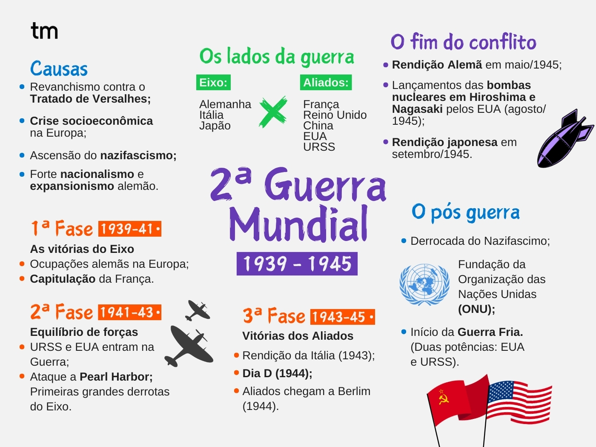

Segunda Guerra Mundial
A Segunda Guerra Mundial (1939-1945) é considerada o maior conflito militar do século XX. Marcada pela destruição sem precedentes na história da humanidade, o conflito mobilizou nações em todos os continentes, entre os quais estão Grã-Bretanha, Estados Unidos e União Soviética (os "Aliados"), combatendo a Alemanha, Itália e Japão (conhecido como "Eixo"). Estima-se que o custo total da Segunda Guerra Mundial tenha chegado a 1 trilhão e 385 bilhões de dólares. No entanto, mais alarmante do que os custos materiais são as perdas humanas causadas pelo conflito: cerca de 45 milhões de mortos, 35 milhões de feridos e três milhões de desaparecidos.
Mapa mental para entender a Segunda Guerra Mundial
